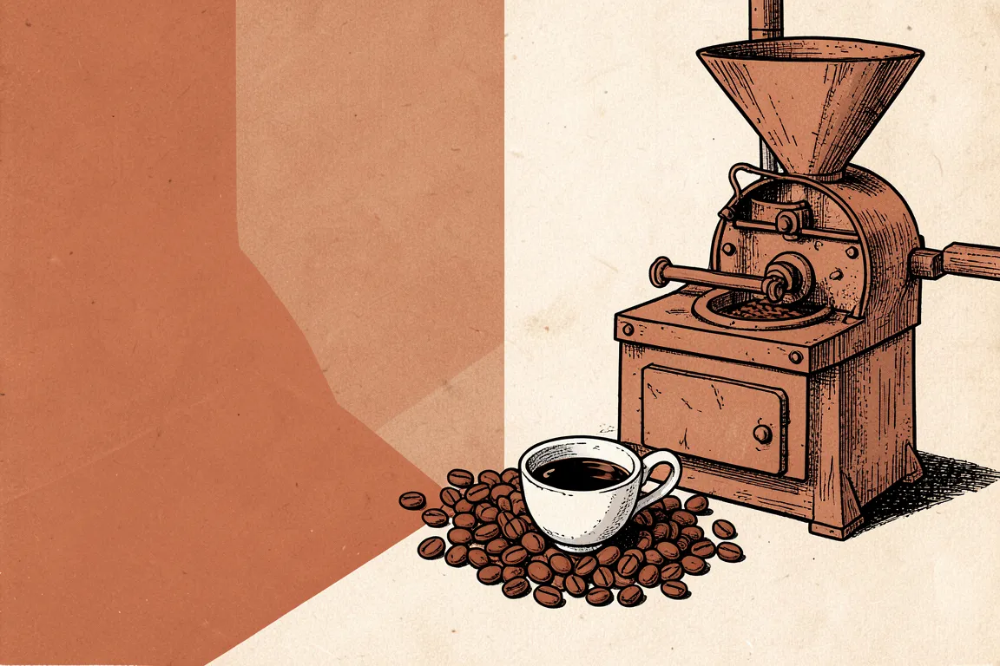

веб · 2021–now · также: Веб с антиквой, Веб как журнал, Новый редакционный
Крупные выразительные заголовки антиквой, тёплая белёсая бумага, мелкий гротеск для подписей и сдержанная палитра. Вернулся как ответ на геометрический гротеск по умолчанию в SaaS-вебе.

Главная идея
Голос важнее нейтральности: антиква с характером заставляет бренд звучать как человек, как в журнале.
Принципы дизайна
Набирайте заголовки контрастной антиквой 56–120px с интерлиньяжем 0,95–1,05 и трекингом от -0,02em до -0,04em.
Берите тёплый белёсый фон (#F6F1E7) и почти чёрные чернила (#1A1714); один приглушённый акцент (терракота #A64B25 или зелёный) занимает меньше 8% поверхности.
Набирайте основной текст антиквой или тихим гротеском 18–20px с длиной строки 55–70 знаков и интерлиньяжем 1,55.
Набирайте подписи, даты и строки автора мелким гротеском или моноширинным 11–13px прописными с трекингом +0,08em.
Используйте курсив как выделение в заголовке: по одному слову или фразе курсивом в каждом заголовке.
Делите страницу линейками 1px; берите буквицы и врезки-цитаты 32–48px.
Кадрируйте фотографии чистыми прямоугольниками с подписью 12px снизу и без скруглений.
Антипаттерны
Жирные заголовки геометрическим гротеском
Градиентные фоны и свечение
Скруглённые карточки, таблетки и эмодзи
Одинаковые плиточные сетки с тенями
Жирный шрифт везде без курсива
Чисто белые фоны
Стоковая иллюстрация в корпоративном плоском стиле